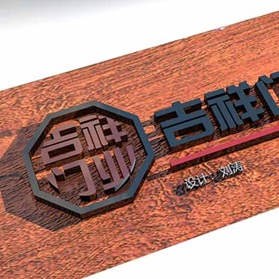

自我介绍
各位朋友，大家好！我是陆湾湾。有句话说得好，这个世界上没有陌生的人，只有还没有来得及认识的朋友。朋友是天，朋友是地，有了朋友才能顶天立地；朋友是风，朋友是雨，有了朋友才能呼风唤雨。人脉就是钱脉！朋友就是资源！

我有一颗善良真诚的心灵。有人说，金子是最纯美的，但比金子更美的是人的心灵。我有一颗洁白无暇、善良真诚的心灵，我心地善良、追求纯真、无私无邪。在家里，对待亲人，关注亲人的冷暖，经常帮助爸爸妈妈做一些力所能及的家务活，打扫卫生，让亲情其乐融融。在学校，我有一颗真诚的爱心。对于困难同学，我总是乐于伸出援助的小手，助人为乐，真诚奉献，对于学习上的后进生，我也是及时给予力所能及的帮助，从不计较个人的得失。 我有一股执着向上的追求。
我善于观察，勤学好问，根据自己的想象，经常在家制作一些小东西，种植一些小植物，实践让我吸取了甘甜，拥有了丰润，丰满了羽翼。 这就是我——蒋梦涵，一个既有爱心、责任心和恒心，又多才多艺的女孩。
- Laboriosam error ratione praesentium
- Similique dolorem
- Iusto ad illum quibusdam